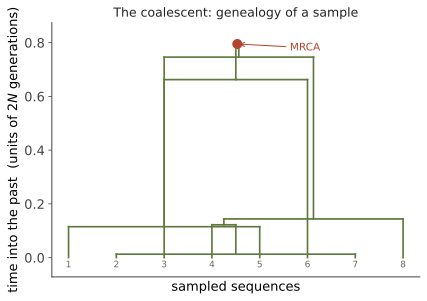

演化 III · 溯祖理论
证据地位：【实】——一套可证明的随机过程理论，是现代群体基因组学的计算核心。 前两页都是前向的：给定当前频率，预测未来走向。溯祖理论把方向倒过来——给定今天采样到的序列，回溯它们的祖先在何时合并。这个视角转换带来巨大的计算优势，也是最优美的一段数学。若你熟悉指数分布与纯死过程，会读得很享受（🔗 研究生数学站随机过程线）。
一、视角倒转：为什么回溯更聪明
前向模拟 Wright–Fisher 必须追踪整个群体（\(2N\) 个拷贝）世代相传，其中绝大多数谱系没有留下今天的后代——算力浪费在与样本无关的历史上。
溯祖只追踪样本的祖先。从 \(n\) 条现代序列出发向后看，祖先数只会减少（合并），最终归于最近共同祖先（MRCA）。当 \(n \ll N\) 时，这个过程只需处理 \(n-1\) 次合并事件——计算量与群体大小无关。这是 Kingman（1982）的贡献，也是现代群体基因组学推断得以可行的技术前提。
二、Kingman 溯祖过程
在标准假设下（中性、常数大小 \(N\)、随机交配），向后看时：
两条特定谱系在上一代合并的概率 = 它们选到同一个亲本的概率 \(= \dfrac{1}{2N}\)。
\(k\) 条谱系中任意两条合并的概率约为 \(\dbinom{k}{2}\dfrac{1}{2N}\)。以 \(2N\) 代为时间单位（记为 \(t\)），合并等待时间服从指数分布：

两个重要期望值：
两个反直觉但重要的结论：
- MRCA 时间几乎不随样本量增长（\(n\to\infty\) 时收敛到 \(4N\) 代）。加样本无助于看到更古老的祖先——树的顶端由最后两条谱系主导。
- 总枝长只随 \(\ln n\) 增长。因为突变发生在枝上，多样性（分离位点数）也只对数增长——这解释了为什么测更多个体的边际收益递减。
三、把突变洒在树上
溯祖把演化过程解耦成两步，这是它最实用的性质：
- 先生成谱系树（只依赖人口统计学：群体大小、结构、迁移）；
- 再沿枝按泊松过程撒突变（只依赖突变率）。
于是分离位点数 \(S\) 的期望：
\(\theta\) 是群体尺度突变率，群体遗传学的核心参数。同时核苷酸多样性 \(E[\pi] = \theta\)。这两个估计量在中性平衡下应当一致——它们的差异正是 Tajima's D（上一页），现在可以看出这个统计量的来历了。
四、人口历史如何写进树形
树的形状对人口历史极其敏感，这使溯祖成为推断历史的显微镜：
| 历史事件 | 对树的影响 | 对数据的影响 |
|---|---|---|
| 群体扩张 | 合并集中在久远过去，树呈"星状"（长外枝） | 大量低频变异，Tajima's D 为负 |
| 群体瓶颈 | 瓶颈期合并率骤升（\(1/2N\) 变大），谱系快速合并 | 多样性下降，特定时段谱系聚集 |
| 群体结构 | 同一亚群内先合并，跨群合并需等待迁移 | 深层分支，\(F_{ST}\) 升高 |
| 选择性清除 | 局部区域树被压扁（近期共同祖先） | 局部多样性降低（承上页） |
位点频率谱（SFS）是最常用的汇总统计：把变异按等位基因频率分类计数。中性常数大小群体的期望 SFS 正比于 \(1/i\)（第 \(i\) 个频率类）。观测 SFS 与该期望的偏离，可反演出人口历史——这是从基因组重建人类迁徙史的主要方法（下一页会用到）。
重组的影响：不同基因组区域有不同的谱系树（重组打断连锁），整个基因组是一个祖先重组图（ARG）。近年的重要进展是能在全基因组尺度上推断 ARG，从而榨取远多于汇总统计的信息——这是当前活跃的方法学前沿。
五、一个常被误解的推论：线粒体夏娃
溯祖能澄清一个流传甚广的误解。"线粒体夏娃"指所有现代人类线粒体 DNA 的最近共同祖先（约 15–20 万年前的一位女性）。
她不是"当时唯一的女性"，也不是"人类的母亲"。溯祖告诉我们：任何一个非重组位点，其谱系必然回溯到某个单一祖先——这是数学必然，不是生物学发现。当时存在成千上万的女性，只是其他人的线粒体谱系随机灭绝了（漂变的必然结果，承线三第二页）。
而且不同基因座有不同的 MRCA，来自不同的个体、不同的年代：Y 染色体的 MRCA（"Y 染色体亚当"）与线粒体夏娃既非同代也非配偶。
这是溯祖思维最好的实用价值：它让你能识别一大类关于"共同祖先"的错误推论。
六、为什么这套理论重要
溯祖是从数据反推历史的引擎。今天几乎所有从基因组推断人口史、检测选择、估计分歧时间的方法，底层都是溯祖或其变体（PSMC/MSMC 从单个个体的基因组就能重建过去数十万年的群体大小曲线——因为一个二倍体个体的两条染色体本身就是两条谱系，其合并时间沿基因组的分布携带了历史信息）。
一个人的基因组里，写着他整个物种的人口史。 这是我认为整门课里最令人震动的事实之一，下一页会用它读人类的过去。
下一页：演化 IV——系统发生与物种形成。从群体内的谱系放大到物种间的树：如何从序列推断进化树、树的不确定性从何而来，以及"物种"这个概念本身的麻烦。